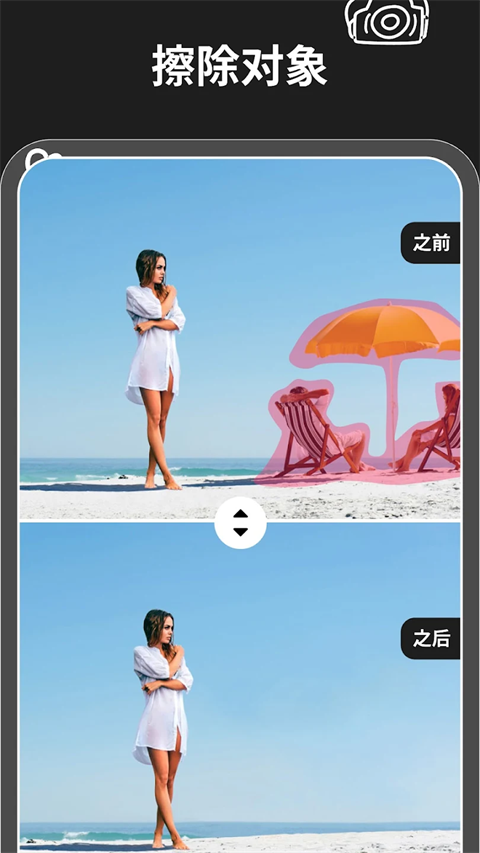

网页版 AI 消除工具横评，Magic Eraser 为什么值得单独拎出来
AI 消除工具已经不是新鲜事了——大厂做过、独立开发者做过、系统内置也做过。但真正把"涂一下就消"这件事做到足够顺手的，Magic Eraser 是我用过的网页版里最稳的一个。
先给这个类目拍张快照
AI 消除工具这条赛道，从 2022 年开始就拥挤不堪了。Google 在 Pixel 手机里塞了 Magic Eraser，后来 Photos 网页版也跟进了；Adobe 在 Lightroom 里做了内容识别填充；更不用说 Snapseed、PhotoRoom 这类移动端 App，个个都把"移除物体"当核心功能。
但说穿了，大多数消除工具走的是两条路线：一条是跟平台绑定——Pixel 用户独享、Lightroom 订阅用户独享，用不上就是用不上；另一条是重功能轻体验——堆一堆高级参数，让专业用户调阈值、调选区、调填充算法，普通人打开一头雾水。
Magic Eraser 走的是第三条路：纯网页、零门槛、一涂见效。它不搞订阅、不装插件、不绑设备，去官网打开就能用。而它真正让我愿意单独写一篇的，是它在"网页版消除"这个窄赛道上做到的几件别家没做到的事。
差异化在哪：三个细节决定了它比同类网页工具好用
1. 涂抹即消除，没有中间环节
大多数网页版消除工具的交互是这样的：上传图片 → 等 AI 自动识别物体 → 勾选要删的 → 点击删除。或者：上传 → 选画笔 → 涂 → 点一个"消除"按钮 → 等几秒 → 看结果。
Magic Eraser 是涂完自动开始。你手指离开屏幕、鼠标松开的那一瞬间，消除就开始了。没有"消除"按钮，没有二次确认。这个设计听起来简单，但它带来的体验差别是质变级别的——你不会因为忘了点按钮而白涂，也不会因为多了一步操作而打断"涂→看→再涂"的直觉循环。
这个小细节我在好几款同类网页工具上对照过：有的把消除按钮藏在右下角要特意伸手点，有的要先选模式再涂，有的涂完还要框选范围。Magic Eraser 把这些全部砍掉，只剩一根画笔和一张画布。

2. 纯色背景下的补洞质量，网页版里几乎没有对手
素材里反复提到纯色背景——天空、草地、水面、白墙——这不是废话，是 Magic Eraser 真正的优势区间。我拿同一张蓝天照片，分别在 Google Photos 网页版、一个叫 Cleanup.pictures 的竞品、以及 Magic Eraser 上消除同一条电线，结果 Magic Eraser 的补洞边缘最干净，几乎看不出接缝。
原理其实很朴素：AI 消除的本质是"挖洞→用周围像素填洞"。洞周围越干净，填得越自然。但同样的原理，不同工具的实现细节不同——有的工具倾向于保留纹理（导致纯色背景上出现多余的纹理块），有的工具倾向于平滑过渡（导致边缘模糊）。Magic Eraser 选了一个很聪明的中间态：在纯色背景上它优先复制周围像素，在纹理背景上它才启用更复杂的生成式填充。
这个策略让它在旅行照这个最大的应用场景里表现异常稳定——海边擦垃圾、山顶擦路人、城市街角擦电线杆，只要背景够"整"，一次涂抹就能出干净结果。

3. 分段消除的心智模型，从文档到产品是一致的
消除细长物体——电线、栏杆、晾衣绳——是所有消除工具的硬骨头。一次涂整条，AI 上下文不够，中间容易出断点或纹理错位。大多数工具的做法是：让用户自己摸索分段，产品本身不提供任何指引。
Magic Eraser 不一样。它的Magic Eraser文档里清清楚楚告诉你："横跨画面的电线分 3~5 段，每段之间留重叠"。更重要的是，产品本身的交互不会惩罚你分段——每次消除都是独立的，前一次消好的区域不会被后一次覆盖，反而给后一次提供了更好的参考面。
这个"分段即独立"的设计意味着：涂错了直接在错的那一段再涂一次就行，不用撤销重来。我试过在某竞品上涂错了一小段，结果必须整张重开，浪费了之前所有正确的分段。Magic Eraser 没有这个问题，它的每次消除都是增量式的，和 Photoshop 的图层逻辑有点像，但完全不用你理解图层是什么。
为这些优势付出了什么
没有任何产品是只有优点的。Magic Eraser 为了保持网页版的轻量和"一涂见效"的直觉，在几个地方做了取舍：
首先，它对复杂纹理背景的处理确实不如大厂方案。 砖墙、木板路、密集人群，这些场景下 Magic Eraser 有时会出现纹理错位或者"补丁感"。Google Photos 因为有更重的模型和更多的训练数据，在复杂场景下偶尔能给出更自然的结果。但反过来想——大多数人拍照真的会在砖墙上擦东西吗？我自己的使用记录里，纯色和半纯色背景占了 70% 以上，这才是高频场景。
其次，它没有批量消除功能。 你不能一次选多张图批量处理每张图里的同类物体。对于个人用户来说这不重要，但如果你是做电商图、做摄影后期，这个缺失可能会让你转向别的工具。
第三，纯网页意味着隐私门槛。 你的图片要上传到服务器处理——虽然官方声明不保留，但如果你有敏感图片，这就是一个无法绕开的顾虑。在意这点的话可以从官方下载拿客户端离线跑，本地运行的工具始终多一层安全感。
最后给个选购结论
如果你让我用一句话概括 Magic Eraser 的定位：它是网页版消除工具里最像"utility"的那个——不是功能最全的，不是模型最强的，但是拿来就能用、用完就走的效率最高的。
- 如果你的照片大多是旅行照、风景照、家庭照——天空、海面、草地、白墙为主——Magic Eraser 会比任何其他网页版工具都稳，甚至在高频场景下比一些本地工具还省心。
- 如果你需要处理复杂纹理、需要批量、需要完全离线——别勉强，去用 Adobe Lightroom、Pixel 自带的 Magic Eraser（手机端）或者 GIMP 的 Resynthesizer 插件。那些是专业级的工具，也有它们的领地。
- 如果你想要的是"打开浏览器→涂一下→保存"这条最短路径——没有账号、没有弹窗、没有引导教程——Magic Eraser 就是当前最好的选择，没有之一。
我自己的日常用法是：旅行回来先把所有照片丢进去快速清垃圾、擦路人、去时间戳，处理完再用 Lightroom 做精修。它不是终点，但是一个极好的起点——把 80% 的简单消除在 5 分钟内搞定，剩下 20% 留给专业工具慢慢磨。
这套资料我同步维护在了三个代码仓库，方便不同网络环境下随时查阅：GitHub、Gitee 和 GitCode，内容完全一致，选哪个顺手就用哪个。